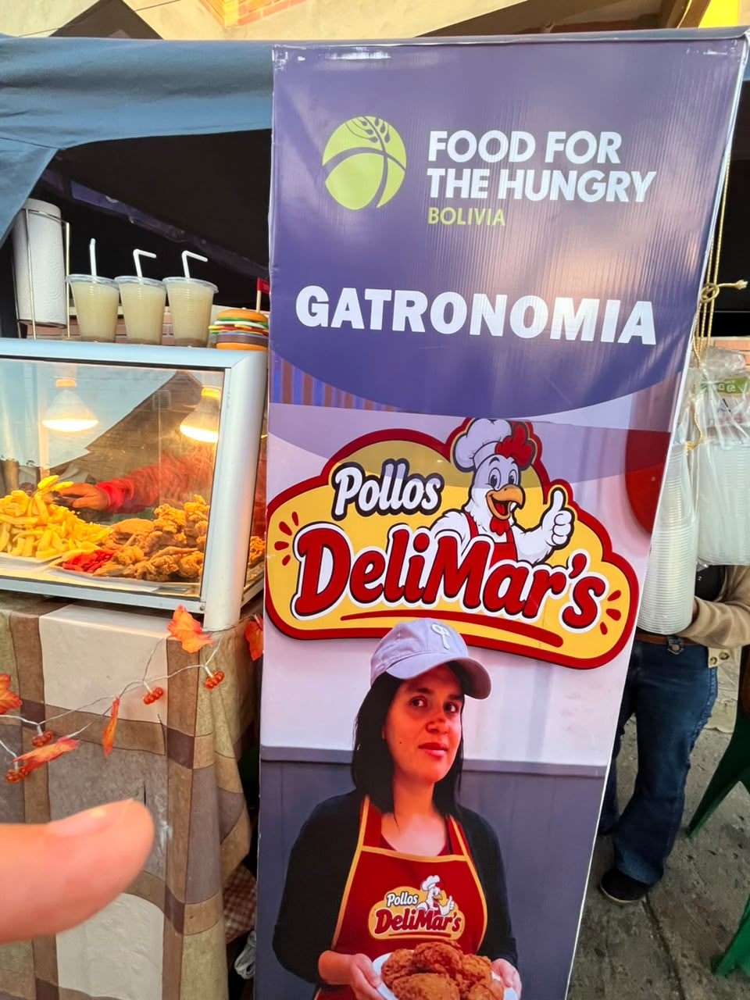
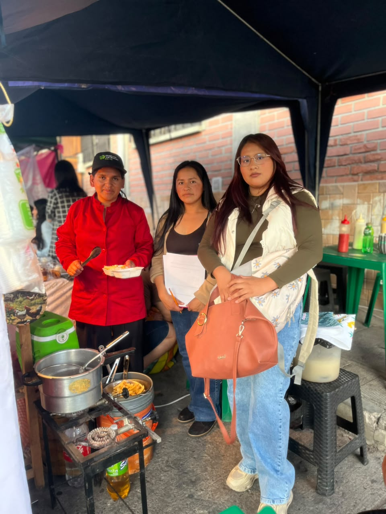
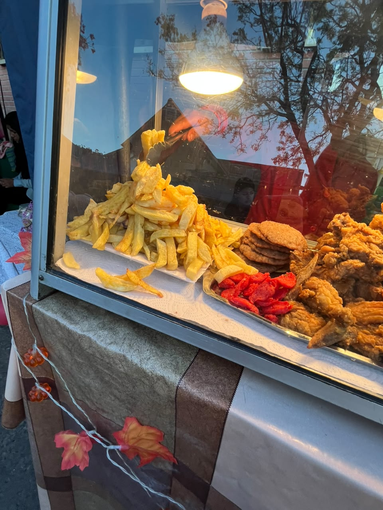

FEXPO ITSEC 2026 - ¡Bienvenidos!
La FEXPO ITSEC Sucre 2026 es un espacio que permite conocer diferentes emprendimientos, sus productos y las experiencias de las personas que, con esfuerzo y dedicación, desarrollan sus propios negocios.



Pollos DeliMars es un emprendimiento gastronómico dedicado a la preparación y venta de deliciosas comidas rápidas. Entre sus principales productos se encuentran el pollo a la broaster, las salchipapas y las hamburguesas, opciones pensadas para quienes disfrutan de una comida sabrosa.
La propietaria del emprendimiento es Marlen Alenis Calvimontes, quien inició este proyecto hace tres años con un capital inicial de Bs 1.000. A través de su esfuerzo y perseverancia, logró desarrollar su negocio y continuar ofreciendo sus productos a sus clientes.
Durante sus inicios, una de las principales dificultades fue encontrar un lugar fijo para vender, ya que anteriormente comercializaba sus productos en la calle. Sin embargo, con dedicación y constancia, consiguió establecer su propio restaurante en la zona de Villa Margarita.
La historia de Pollos DeliMars demuestra que la perseverancia es importante para superar las dificultades y hacer crecer un emprendimiento. Actualmente, su restaurante representa el resultado del esfuerzo realizado durante estos tres años.
Pollos DeliMars se encuentra en la zona de Villa Margarita, donde sus clientes pueden visitar el restaurante y disfrutar de sus productos.